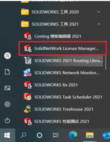
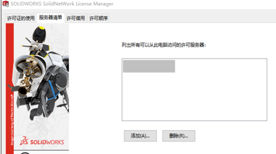
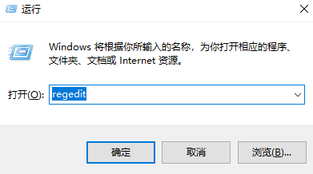

批量修改服务器地址
当 SOLIDWORKS 服务器转移到另一台电脑上后，对应所有客户端的服务器地址都要进行更改
手动模式
\1. 点击左下方的开始菜单栏，找到 SOLIDNetWork License Manager
\2. 打开许可服务器管理器，切换到“服务器清单”选项卡 ，删除现有的服务器地址和添加新的服务器地址。
注册表模式
针对客户端多的客户，如果一个一个的添加，未免显得太慢了。
我们可以通过上面【手动模式】把修改好的新服务器设置“导出”成注册表文件，运行该文件来设置新服务器名称
\1. 通过注册表修改服务器，Win+R打开运行命令，输入regedit，打开注册表
找到以下路径：右键选择导出
1 | 计算机\HKEY_LOCAL_MACHINE\SOFTWARE\FLEXlm License Manager |
导出后，将会获得一份能设置许可服务器地址的（.reg）格式文件。将其批量发个每一个客户端的工程师，只需要双击该文件导进去，即可修改，节省大量的操作修改。
如需要：
你还可以右键编辑.reg格式文件，并修改SW_D_LICENSE_FILE后面相应的值，如25734@IP地址或者电脑名称， 若有多个服务器地址时，使用英文分号进行分隔。